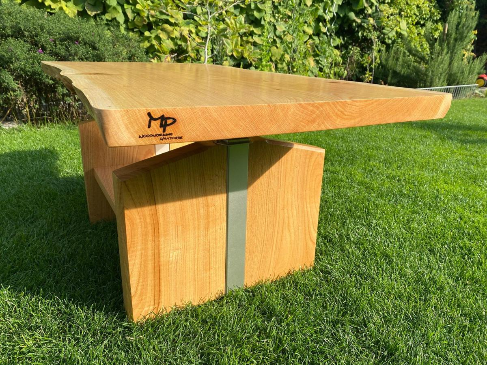
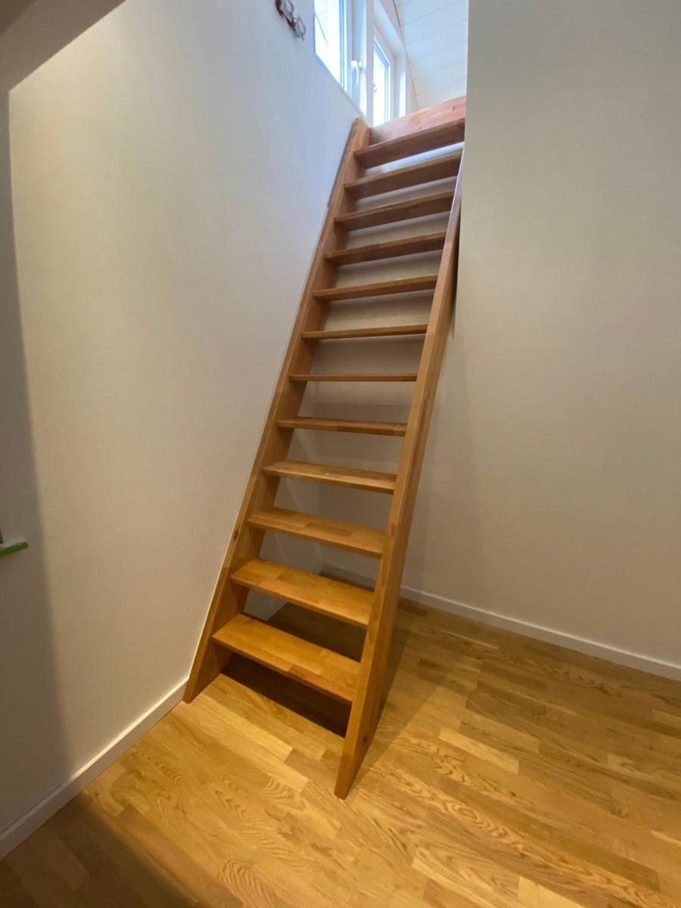
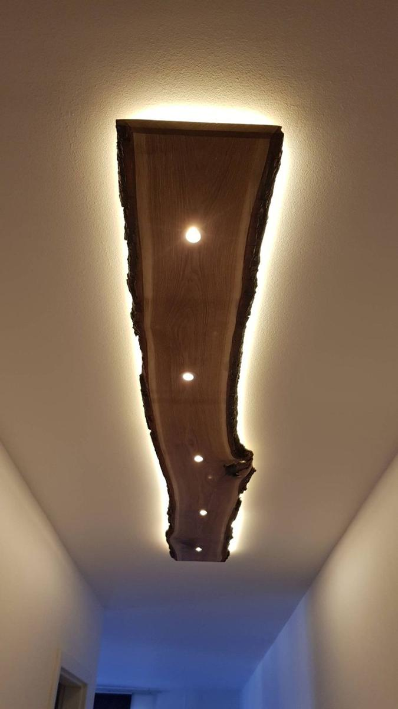
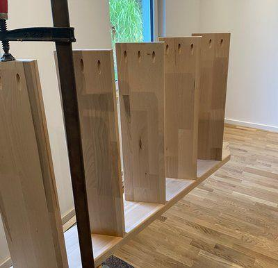
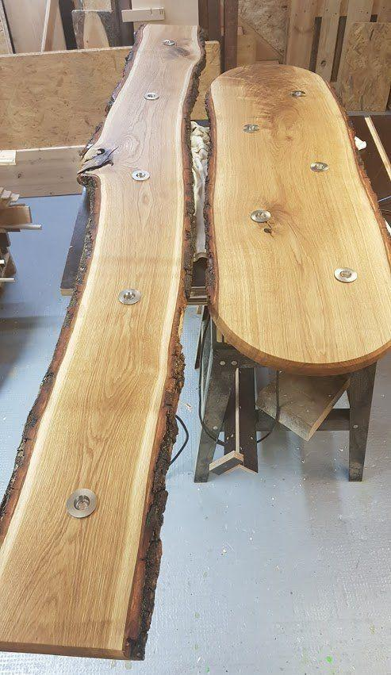
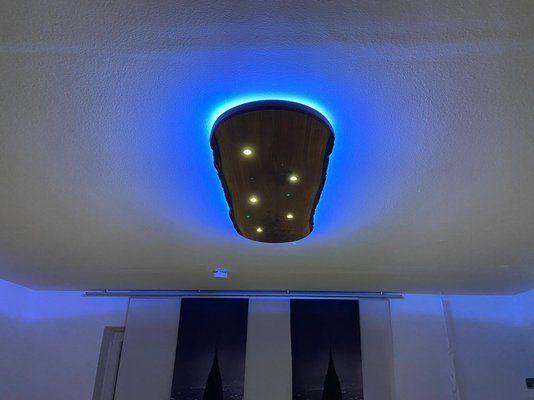
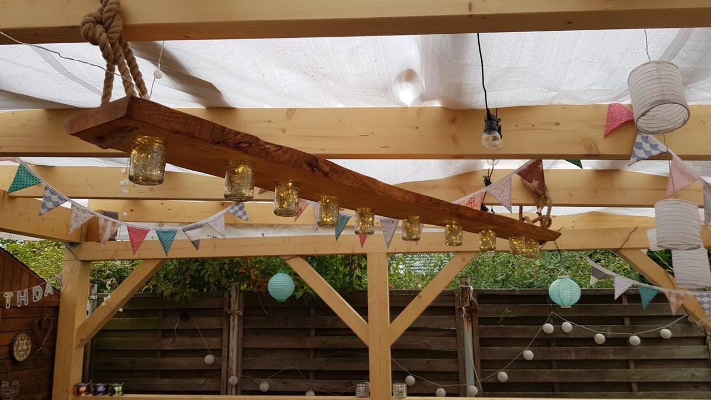
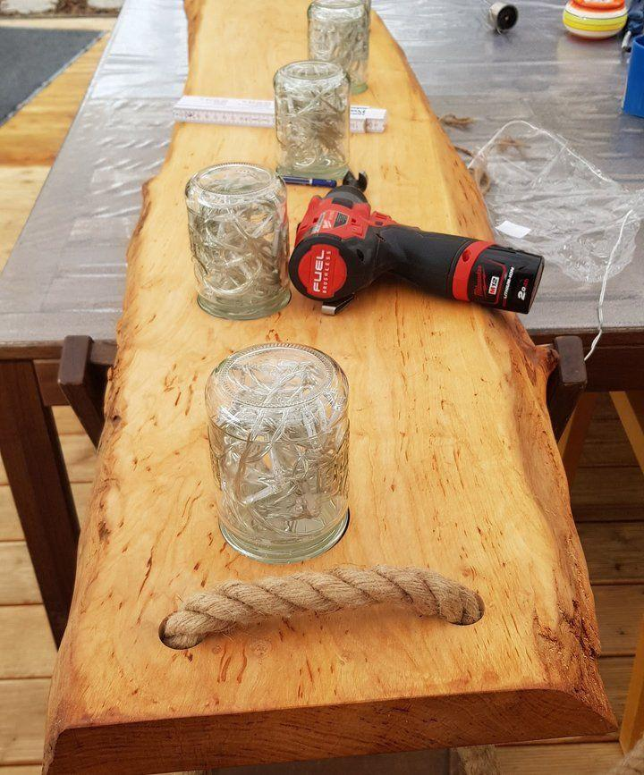

Meine Projekte
Umbau von einem Couchtisch

......der Couchtisch war unschön und hat nicht mehr gefallen, da wurde ich gefragt ob ich eine Idee habe diesen umzubauen.
Die einzige Forderung war die Höhenverstellung sollte beibehalten werden.
Nachdem wir gemeinsam das Holz ausgesucht und auch das passende Stück gefunden haben, ging es los.
Beidseitig mit Baumkante und so rum gedreht das die Tischfläche das maximal hergibt war gewünscht. Das Ergebnis kann man sich hier anschauen....
Schönes Projekt


Bau einer Treppe mit Sondermaßen aus Buche

....eine Treppe musste her so war die Aufgabe,
Eine größere Gartenlaube wurde komplett Innen renoviert und erneuert.
Der alte Dachboden wurde in einer Hälfte des Hauses als Liegefläche umgebaut. Um dort hoch zu kommen musste eine Treppe her.
Die Treppenschräge sowie auch die Höhe entsprachen keiner Norm, somit musste eine individuelle Lösung her.
Das Ergebnis ist hier zu sehen...

Bau von 2 Deckenlampen aus Massivholz Eiche

...die Aufgabe war eine rustikale, aber auch etwas moderne Deckenlampe in den Wohnraum zu integrieren.
Nach Rücksprache sollte es Eiche massiv mit Baumkante werden.
3 Watt LED Spots verbaut und LED Band als indirekte Beleuchtung.
Die Flurlampe ist ca. 2m lang und die direkte sowohl auch die indirekte Beleuchtung gehen zusammen an. im Wohnzimmer sind diese getrennt geschaltet, Dort ist ein RGB Band verbaut, hier sind noch 2 Funk Aktoren integriert da dies hier separat geschaltet werden sollte, das aber die Installation nicht hergegeben hat.
Das Ergebnis lässt sich sehen und alle sind sehr zufrieden.

Massivholzlampe mit Marmeladengläser....


ein sehr schönes Projekt stand vor mir....
Mir wurde ein Kiste mit Marmeladengläser hingestellt dazu eine grobe Massivholzbohle und die Aussage war...das daraus eine Individuelle Lampe entstehen soll....
Der Plan war geschmiedet und die Idee geboren und es ging los...
Bohle abgerichtet und auf Dicke gehobelt...
Gläser ausgerichtet..gefräst...Oberfläche behandelt mit Öl, dann die Lichter einegfedelt und verdrahtet.
Die Beleuchtung ist per Fernbedienung schaltbar und ist darüber auch Dimmbar.
Zum Schluss beim Kunden an Seilen dann aufgehangen.
Brotzeitbretter aus Eiche...
Wir bieten hochwertige Brotzeitbretter aus Eiche, die perfekt für Ihre Küche oder Ihre nächste Feier sind. Unsere Bretter werden mit Sorgfalt und Liebe zum Detail handgefertigt und verleihen Ihrem Essen einen rustikalen und eleganten Touch. Entdecken Sie jetzt unsere vielfältige Auswahl und geben Sie Ihrer Küche das gewisse Extra!
Fensterbretter aus Eiche...
Individuell gefertigte Fensterbretter aus massiver Eiche – passgenau zugeschnitten, sorgfältig geschliffen und mit hochwertigem Öl behandelt. Ein natürliches Highlight für jeden Raum.